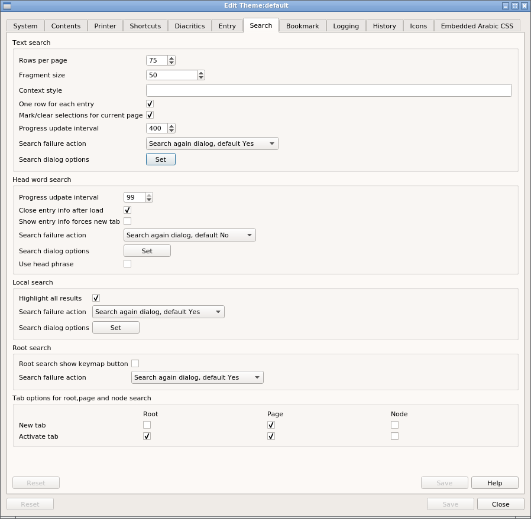
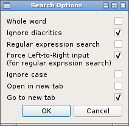

Text search
Rows per page
Sets the maximum number of rows in a page. If this is set to a high-number, there may be a noticeable "hang" while the table is being loaded.
Fragment size
The context column shows found text in its context. This setting controls how many characters either side of the found text are to be shown in the context column.
Context style
This CSS fragment sets the appearance of the non-Arabic text in the context column. The Arabic text is controlled here.
One row per entry
When the searched for text appears in an individual entry multiple times:
-
when set, each matched entry get one row in the results table and the table shows the number of matches for the entry. The context column shows the first occurrence of the target in the entry.
-
when not set, each match get its own row in the table and the table shows the position of the target text and the context of each match.
Progress interval
Determines how frequently the progress bar is updated.
Search failure action
Controls what happens when a search returns no results.
- Show a search again dialog, default button 'yes'
- Show a search again dialog, default button 'no'
- Show the text search dialog, report search failure in status area
- Show nothing, report search failure in status area
Dialog options

Setting these for each search type, sets the corresponding option in the search dialog.
To hide the keymap button in the text search dialog, set the option here.
Head word search
Close after load
When viewing the entry details of a successful find, the entry may be loaded into a new tab. If this options is set, the view dialog will be closed after the tab has been loaded.
Use head phrase
Sets the head phrase option in the headword search dialog.
Local search
Show all results
When this is set, all matches on the current page are highlighted. When not set, the first match is highlighted and subsequent matches are highighted using either the appropriate key command (as above) or shortcut.
Root, node and page
These options control where to load the search result when the search is successful.